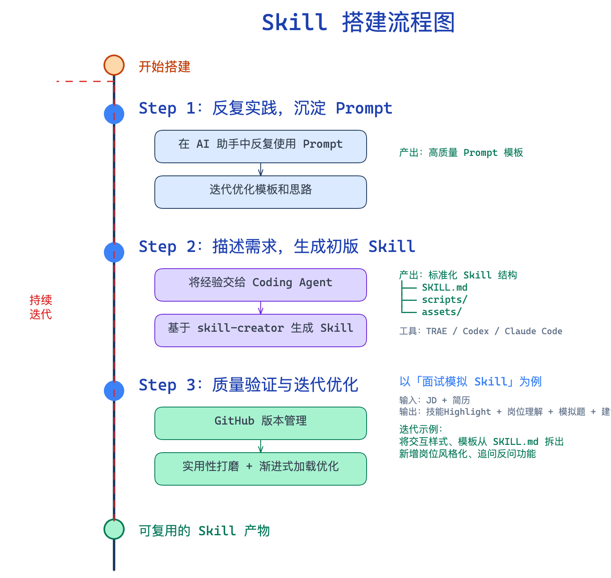
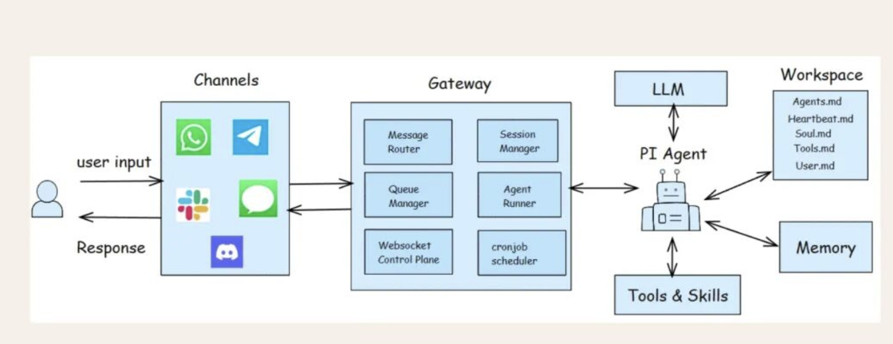
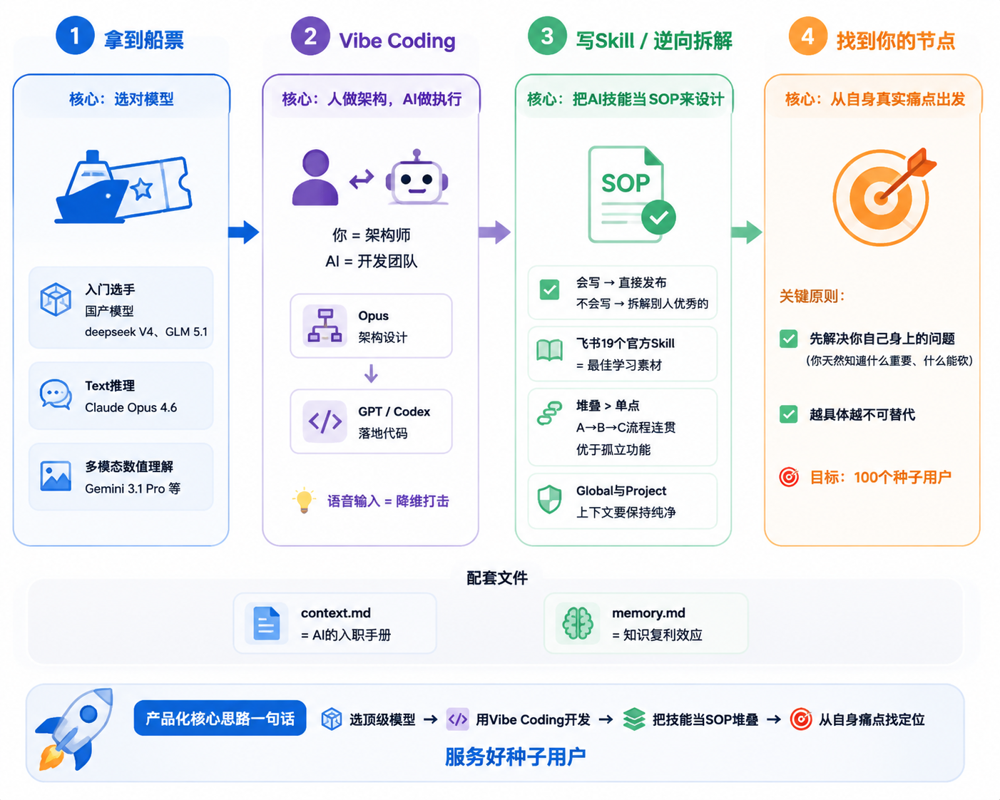
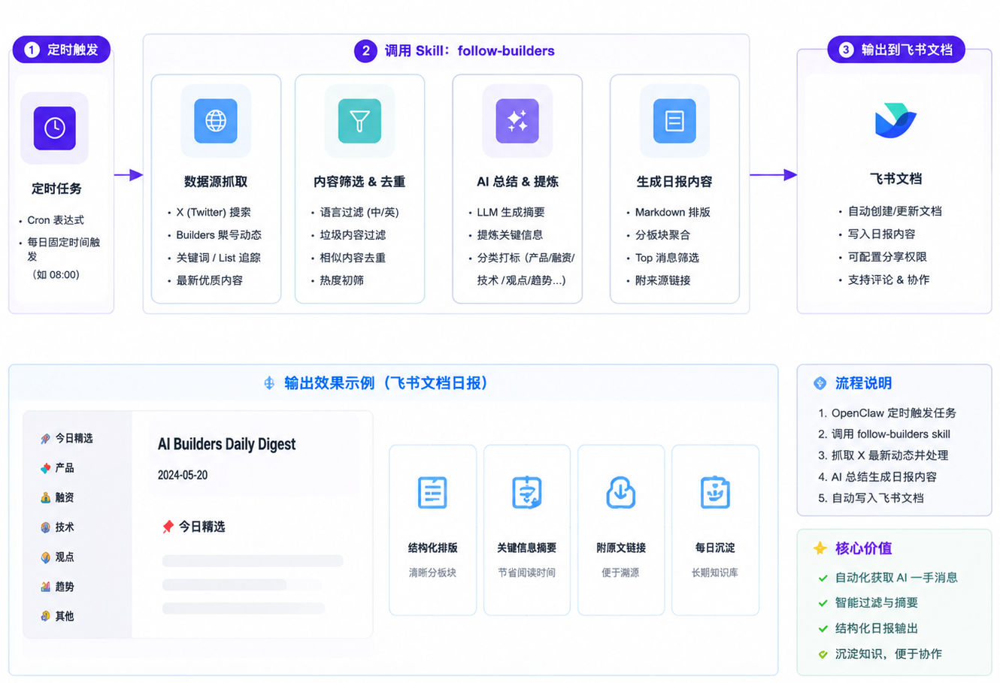

Flow
Skills 搭建流程

AI Native Builder
用产品思维驱动 AI 工作流，打造场景化落地的 AI 应用。
PRODUCT SIGNALS
Experience
AI Native PM
从 Prompt 到 Harness 工程，从 Vibe Coding 到 AI 社群，探索 AI 与真实场景的深度融合。持续 TBC...
AI Native PM
持续把 AI 能力拆成可复用工作流：从提示词、Skills、Agent 协作到原型实现，用产品视角验证真实需求、交付边界和可持续价值。
产品经理
负责多模态 AI 问答助手和音视频云产品商业化，从 0 到 1 推动高校 AI 场景落地，共接入 30+ 客户。
产品经理
主导高校招生就业场景 AI 问答助手，整合 LLM、RAG、实时语音和数字人能力，2 个月上线 MVP，接入 30+ 所高校，并推动定价、交付和售后标准化。
产品经理
负责快手 2B 业务中从 0 到1 落地实时音视频 PaaS 产品矩阵与视频会议 SaaS 能力建设。
产品经理
搭建客户接入、监控排障和数据运营流程，推动控制台、运管平台、开发者中心与多端 Demo 上线，支撑音视频产品获客和交付，共接入 10+ 个业务方。
硕士｜计算机科学与技术
计算机专业背景，具备理解 AI、音视频与平台型产品的技术基础。
硕士｜计算机科学与技术
系统训练计算机基础和工程化思维，形成能与算法、音视频、后端和前端团队高效协作的技术理解能力。
本科｜计算机科学与技术
系统学习计算机基础，形成技术理解、逻辑拆解和结构化表达能力。
本科｜计算机科学与技术
在技术学习之外持续训练结构化表达，曾担任校辩论队主力，多次获得最佳辩手，强化复杂问题拆解能力。
AI Works


AI Cookbook
01
把重复的日常工作拆成输入、判断、执行和标准，快速产出一个 skill。
02
记录 2026 年流行的新概念，每天学习并简述 1-2 个 AI 新知识点，比如快速了解 Openclaw、Hermes 等异同点。
03
从技术、青年创新和 AI 实践角度复盘一次高密度线下大会体验。
04
总结 X 等 AI Builders 一手消息平台热门资讯，龙虾定时任务每日更新。
Flow

Flow

Flow

Flow

AI Toolkit
亮点：公认 TOP 级的模型和 Agent 架构，从“AI编程工具”变成你的“AI全能助手”。
亮点：Agent 工具入门优选，上手简单、国内无需魔法可用 AI IDE，且集成多种国产模型。
亮点：基于私有知识库快速生成总结、PPT 和脑图，大幅降低研究与内容整理成本。
亮点：自然语言生成高保证 UI，快速验证产品原型，适配 vibe coding 工作流。
亮点：把复杂产品逻辑和 AI 工作流快速转化为结构化可视化图，生成后可手动二次微调。
亮点：打通日常 Agent 与飞书生态，包括消息、文档、多维表格，便于接入自动化工作流。